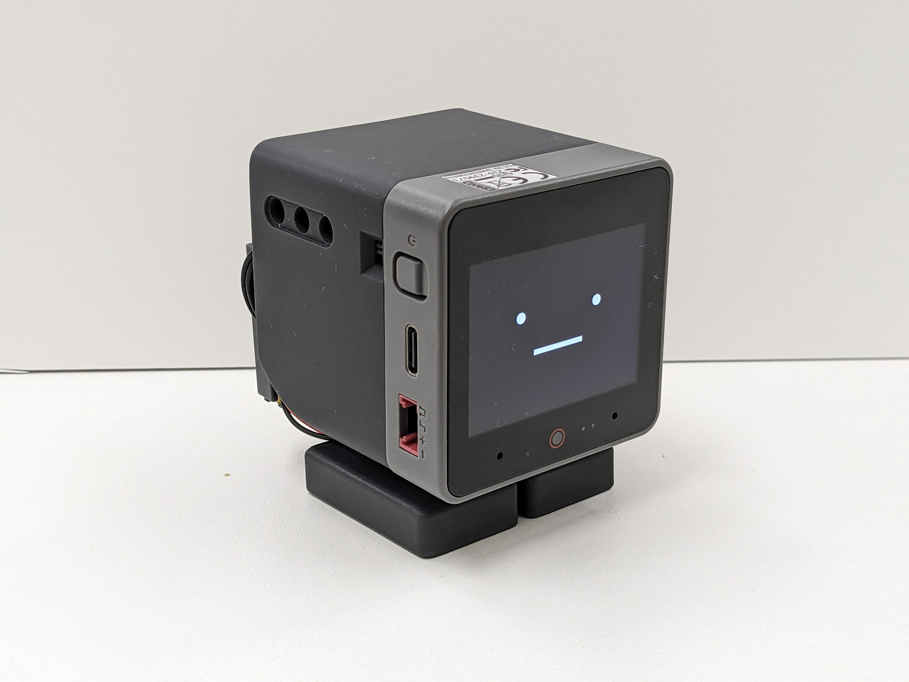
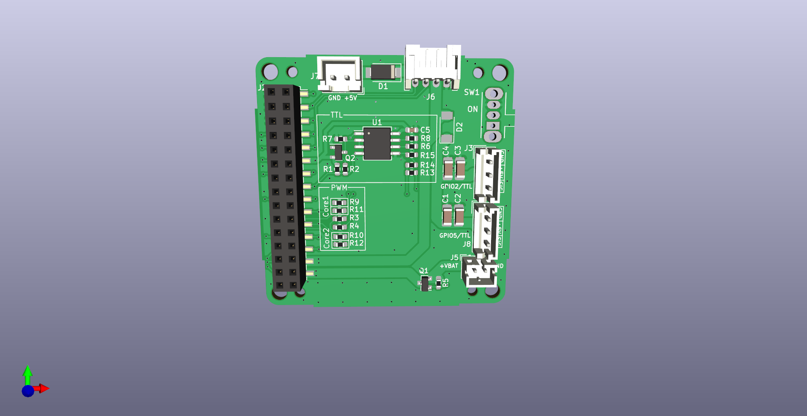
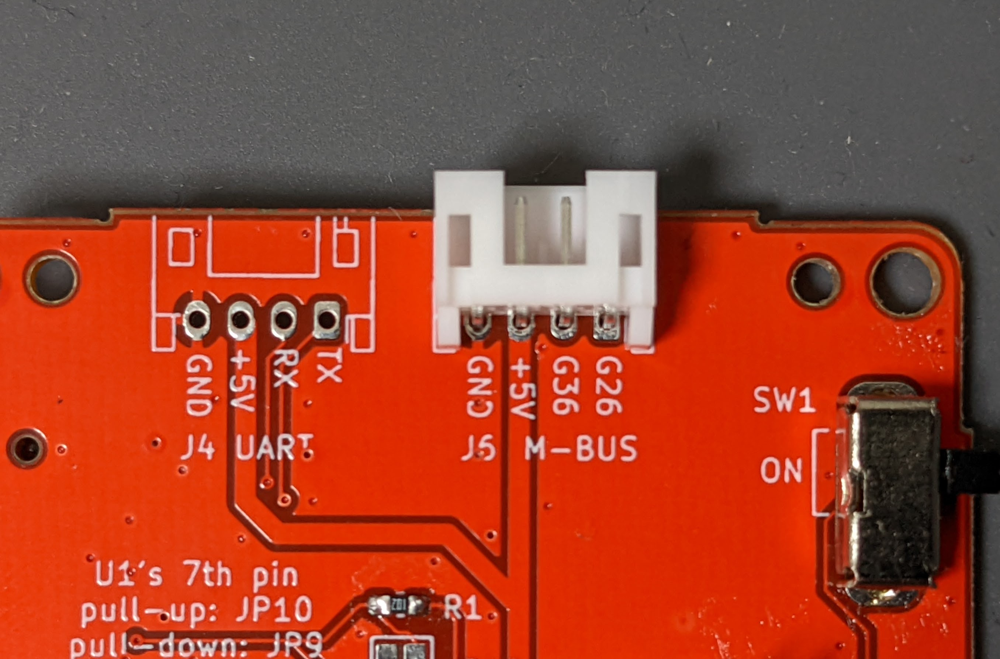
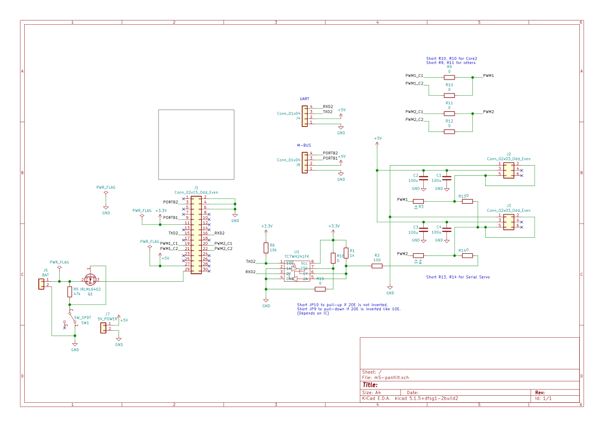
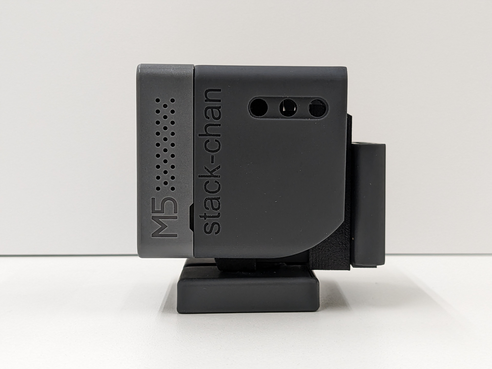
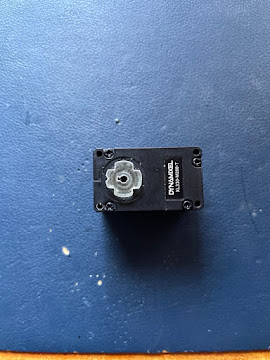
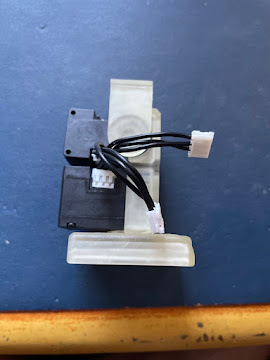
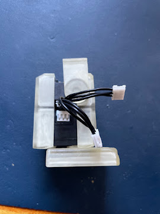
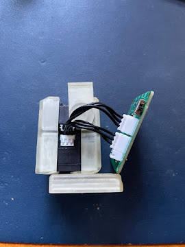
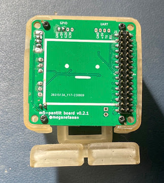

v1.0 官方外壳手搓路线（CoreS3 + XL330）：方案与完整教程
本目录是主教程《StackChan 手挫完全指南》的第二个独立子路线（另一个是
k151-body-route/）： stack-chan v1.0 官方开源外壳 + Robotis XL330 串行舵机 + 开源底板 + M5Stack CoreS3。 结构件参考官方 v1.0 装配指南；CoreS3 引脚和固件按本版单独适配。静态核对已完成，尚未完成实物整机验证。

0. 一句话结论
- v1.0 外壳官方文档明确**只支持 DYNAMIXEL（XL330）**舵机（
case/v1/dynamixel.md原文）。 - 舵机选 XL330-M288-T×2（扭矩优先；要速度选 M077-T）。
- 全部资料都是一手官方件：外壳 STL（开源）、底板 KiCad（开源）、固件（开源），本包已附带。
- 供电两档：桌面用 5V USB（J7 口）；便携用 3.7V 锂电（400/640mAh，PH2.0 插头）装进官方"Backpack"电池背包（接底板 J5，需验证主机充电路径，见 §3.2）。
- 预算（估算）：¥700–1000+（按下表历史估算合计约679–979元起，另加元件、SMT/运费和耗材；需要实时核价）。
1. 为什么这是"官方标准配方"
| 环节 | 官方出处 | 开源状态 |
|---|---|---|
| 外壳 8 件 STL | stack-chan/stack-chan 仓库 case/v1/（含官方装配指南 dynamixel.md，本包 reference/ 已存档） |
✅ |
| 底板 m5-pantilt v1.0 | 同仓库 case/pcb/m5-pantilt-v1.0/（KiCad 工程 + 原理图，本包 ../pcb/m5-pantilt-v1.0/） |
✅ |
| 固件 | 同仓库 firmware/（预编译包 + 源码，本包 ../firmware/） |
✅ |
| 主控 | M5Stack CoreS3（商品件） | 硬件闭源、SDK 开放 |
外壳和舵机组合有官方装配参考；底板 J3/J8 提供串行模式。CoreS3 外部串口是 GPIO17/18，而通用预编译固件默认 TX7/RX6，本底板不能直接套用默认固件。按 自制固件流程 配置和构建，断电测出 TX/RX 连通关系后再装主机。
2. 舵机选型：XL330-M288-T
| 型号 | 减速比 | 堵转扭矩@5V | 空载转速 | 建议 |
|---|---|---|---|---|
| XL330-M288-T | 288:1 | 0.52 N·m | 103 RPM | ✅ 推荐：扭矩大，转头稳，stack-chan 场景速度足够 |
| XL330-M077-T | 77:1 | 0.215 N·m | 383 RPM | 要快转头/轻负载时选 |
共同规格（以 Robotis e-Manual 为准：https://emanual.robotis.com/docs/en/dxl/x/xl330-m288/ ）：
- TTL 总线半双工，协议 2.0，出厂 ID=1、波特率 57600（都要改，见 §6）
- 电压 3.7–6.0V，重量 18g，工程塑料齿轮，位置/速度/温度/负载全反馈
- 采购：淘宝搜"XL330-M288"（Robotis 授权代理店，约 ¥100–150/只）；确认是 XL330-M288-T（TTL），不要替换为电压或接口不同的其他型号
3. 采购清单（BOM）
3.1 核心件
| # | 物品 | 规格 | 数量 | 参考价(¥) | 渠道 |
|---|---|---|---|---|---|
| 1 | M5Stack CoreS3 | K128 | 1 | 199–249 | 淘宝 M5Stack 官方店 |
| 2 | XL330-M288-T | TTL 串行舵机 | 2 | 100–150/只 | Robotis 淘宝代理店 |
| 3 | m5-pantilt v1.0 底板 | 自己打样（§5） | 1 | 30–50 | 嘉立创 |
| 4 | TTL 通信线 | 4cm，3 pin | 2 | 5/条 | 代理店有售 / 杜邦线代 |
| 5 | 5V 电源 | 稳压 5V，预留 ≥3A 并检查压降 | 1 | — | 已有 |
| 6 | M2×4 盘头自攻螺丝 | 底板固定 | 4 | ~2 | 螺丝包 |
| 7 | M2.5×6 自攻螺丝 | 舵机固定（XL330 附带） | 2 | 0 | — |
3.2 电池（便携供电，可选但推荐）
| 物品 | 规格 | 数量 | 参考价(¥) | 说明 |
|---|---|---|---|---|
| 锂电池 | 3.7V 400mAh（如 401230）或 640mAh（如 501235），PH2.0-2P 插头 | 1 | 10–20 | 接底板 J5 电池口；J5 接 BAT 电源路径，并不是独立充电器；需核对所用主机的充电控制、电池保护和供电方向 |
| 电池背包打印件 | 官方 case/backpack/（本包 ../stl/backpack/） |
1 | 打印 | 有 400mAh / 640mAh / AAA 电池盒三种规格，按买的电池选 |
| 备选：AAA 版 | backpack_aaa + 3×AAA/镍氢 |
1 | — | 打印件可用；须配独立、合适的电源路径，不可把 AAA/镍氢电池接到锂电充电端 |
不装电池也完全能用：5V 电源从底板 J7（XH 2.54-2P）或 M5Stack USB 供电，桌面场景更省心。CoreS3 / Lite / SE 的底座和电池规格不同，按实际型号核对；不能用电池容量推断舵机电流能力。
3.3 舵机调试工具（改 ID/波特率用，一次性投资）
| 物品 | 参考价(¥) | 说明 |
|---|---|---|
| U2D2 + SMPS2Dynamixel（官方推荐） | 200–300 | RoboTiS 官方调试器，Dynamixel Wizard 2 完美支持；以后玩其他 Dynamixel 设备也能用 |
| 省钱替代 | 0–15 | 请卖家代改 ID/波特率，或使用已验证的 TTL 半双工配置工具；普通 USB-TTL 的 TX/RX 不能直接短接接舵机 |
3.4 打印件（§4）
外壳 8 件：自己打印 ¥30–80（耗材），或嘉立创三维猴/淘宝代打 ¥60–120。
预算汇总：¥700–1000+（历史物料估算，含调试工具；未实时核价，SMT/运费另计）。
4. 3D 打印
文件在本包 ../stl/v1-xl330/（官方原版）：
| 文件 | 部位 | 数量 | 说明 |
|---|---|---|---|
| shell.stl | 脸壳 | 1 | 0.12mm 层高 + 支撑，浅色 PETG |
| feet_top.stl / feet_bottom.stl | 底座上下 | 各 1 | 0.16mm |
| bracket_XL330_f / bracket_XL330_b | 舵机前后支架 | 各 1 | 强度件，PLA+/PETG，40% 填充 |
| gear_XL330.stl | 舵机齿轮 | 2 | 0.12mm；孔位公差按打印精度已放大 |
| gear_XL330_narrow.stl | 窄孔备选 | 备用 | 齿轮装上晃/打滑时换它 |
| horn.stl | 舵机角（脖子转接） | 1 | 0.12mm |
电池背包（本包 ../stl/backpack/，按电池规格三选一）：
| 文件 | 适配 |
|---|---|
| backpack_400mah.stl | 400mAh 级锂电（401230 等） |
| backpack_640mah.stl | 640mAh 级锂电（501235 等） |
| backpack_aaa.stl | 3×AAA/镍氢电池盒 |

打印参数：3 壁、20% 填充（强度件 40%）、PETG 或 PLA+。改尺寸需求用 STEP 源文件（仓库 case/v1/）在 Fusion 360/FreeCAD 里编辑。
5. 底板：三种选择
5.1 自己打样 m5-pantilt v1.0（推荐）
KiCad 完整工程在本包 ../pcb/m5-pantilt-v1.0/。要点先记住：
- 两层板，~¥30（打样）+ 可选 ~¥20（SMT 经济套餐）
- 串行舵机模式跳线：只装 R13/R14（0Ω）；R9–R12 不装——它们是 PWM/SG90 模式下选 Core 型号用的（PWM 的 Core2/CoreS3 为 R10/R12，旧 Core 为 R9/R11），串行模式用不到
- 从 1Mbps 开始验证通信；不按旧版“≤115200”说法自动降速。换向时序和回包成功率仍需实测
- 制造文件已生成好：
../pcb/m5-pantilt-v1.0/manufacture/jlcpcb/（Gerber zip + 带 LCSC 号的 BOM + 贴片坐标，嘉立创直接上传，见 5.1.3）


串行版（本路线）舵机口与拨动开关实拍：


5.1.1 这块板是什么
官方开源底板 m5-pantilt 的功能：
- 驱动两颗串行舵机（J3/J8 两个 3-pin TTL 口，自动换向半双工总线）
- 双 30-pin 排母（J1/J2）直插 M5Stack 背面 M-BUS
- 外部 5V 供电口、电池供电，充电由实际主机电源管理器完成，需核对电池保护及主机设置
- （可选）电源开关
信号与供电以当前 .kicad_sch / .kicad_pcb 为准；下图及原理图 PDF 保留作历史参考，其 Q2/R2 参数有差异。

5.1.2 工程文件清单（本包已附带）
../pcb/m5-pantilt-v1.0/
├── m5-pantilt.kicad_pro / .kicad_sch / .kicad_pcb ← KiCad 工程（main 分支 = v1.0 规格）
├── m5-pantilt.pdf ← 原理图 PDF（历史参考，制造以当前 KiCad 工程为准）
├── m5-pantilt-all-pos.csv ← 贴片坐标（CPL），仓库官方提供
├── m5-pantilt.kibot.yaml ← KiBot 一键生成嘉立创制造文件的配置
├── gerber/ ← 仓库只提交了丝印 + 钻孔
│ ├── m5-pantilt-B_Silkscreen.gbo
│ ├── m5-pantilt-F_Silkscreen.gto
│ └── m5-pantilt-NPTH.drl / m5-pantilt-PTH.drl
├── m5-pantilt.pretty/ ← 自定义封装库
└── 其他工程配套文件（lib/sym-lib-table/cache 等）
制造文件已生成好，无需自己导出：manufacture/jlcpcb/ 里有嘉立创三件套——m5-pantilt-gerbers-jlcpcb.zip（Gerber+钻孔）、m5-pantilt-bom-jlc.csv（BOM，含官方原理图自带的 LCSC 编号）、m5-pantilt-cpl-jlc.csv（贴片坐标），以及人类可读的 BOM.md 和下单注意事项 manufacture/README.md。直接跳到 5.1.4 下单即可。
官方仓库只提交了丝印 + 钻孔（铜层 Gerber 在
.gitignore里），上述文件是用kicad-cli从官方 KiCad 工程生成的，复现命令在 manufacture/README.md 文末。想自己生成（或改板后重出）再看下面两种方法。
5.1.3 （可选）自己生成制造文件
方法 A：KiBot 一键生成（推荐，配置官方已写好）
- 安装 KiCad（本 PCB 保留 KiCad 7 格式；本仓库导出脚本需要 KiCad 10 的自动铺铜功能）与 KiBot：
pip install kibot - 在
pcb/m5-pantilt-v1.0/目录执行：kibot -c m5-pantilt.kibot.yaml -e m5-pantilt.kicad_sch -b m5-pantilt.kicad_pcb - 生成物在
generated/下，其中Manufacturers/JLCPCB/是给嘉立创的 Gerber/BOM/坐标文件，另有BoM/Generic/的通用 BOM（HTML/XLSX）。
方法 B：KiCad 手动导出（不装 KiBot）
- 用 KiCad 打开
m5-pantilt.kicad_pcb→ 重新填充全部铜区（B）→ 运行 DRC，解决短路/间距/未连接问题并保存 → 文件 → 制造输出 → Gerbers（导出铜层+丝印+阻焊，另导出钻孔，打包 zip）。 - 贴片坐标：文件 → 制造输出 → 元件位置文件（.pos / .csv）；修改板后必须重新导出，不能沿用旧
m5-pantilt-all-pos.csv。 - BOM：原理图工具 → BOM 导出（以当前
.kicad_sch为准，旧 PDF 保留作历史参考）。
5.1.4 核对元件清单（BOM）
完整 BOM 见 manufacture/jlcpcb/BOM.md：SMT 15 组 / 21 件 + 通孔 4 组 / 5 件（J3/J8/J5/J6/J7），共 19 组 / 26 件带 LCSC 号；另有 自备 3 件（J1/J2/SW1），需要单独采购和安排焊接。核心构成：
| 类别 | 元件 |
|---|---|
| IC | U1 = MAX3485（窄体 SOIC-8，半双工收发；注意 C668204 是窄体 3.9×4.9mm 封装，PCB 已按窄体出 Gerber）、Q1 = IRLML6402（电源软开关）、Q2 = BC857（方向控制） |
| 二极管 | D1 = SS54、D2 = PMEG3030EP |
| 阻容 | 100µ×4、0.1µ×1；0603 电阻×11（其中 R13/R14 = 0Ω 跳线，串行模式必装；R9–R12 不在贴装清单） |
| 连接器 | J1/J2 = 2×15 M-BUS 排母/排针（J1 在背面）、J3/J8 = JST EH 3pin 舵机口、J5 = PH2.0 电池、J7 = XH 5V |
| 手插件 | J6（PH 4pin）、SW1（弯脚 SPDT 开关） |
官方仓库自带的旧版 CPL 只有 3 个件，不完整；以本包生成的 BOM、当前
.kicad_sch/.kicad_pcb为准；旧 PDF 参数有差异，不能据其手抄制造清单。
5.1.5 嘉立创下单（两种玩法）
玩法 1：只打裸板，全部手焊（先核对元件与封装）
- 打开 https://www.jlc.com （嘉立创）→ PCB 下单。
- 上传 5.1.3 生成的 Gerber 压缩包 → 自动解析。
- 参数：2 层、板厚 1.6mm（按个人喜好 1.0 也行）、表面处理默认喷锡、数量 5 片。
- 新客常有 5 片 ¥2 级别活动；提交付款，一般 2–4 天到货。
- 到货后手焊：先 SMD（U1/Q1/Q2/阻容/R13/R14 跳线），再插件。J1 在背面立贴，焊接时注意方向（照
images/m5-pantilt-bottom.png）。
玩法 2：让嘉立创 SMT 贴片（省焊接）
- PCB 下单时勾选 SMT 贴片，上传
manufacture/jlcpcb/m5-pantilt-bom-jlc.csv和m5-pantilt-cpl-jlc.csv；不要用旧版不完整坐标（m5-pantilt-all-pos.csv仅为官方原始全量坐标）。 - 元件匹配页面按 LCSC 号确认各元件，匹配后仍须抽查实际型号/封装。R9–R12（PWM 模式跳线）已从 BOM/坐标里剔除，不会出现在匹配页；J1/J2/SW1 为来料件也不在订单里，到手自己焊（J1 在背面立贴，注意方向，照
images/m5-pantilt-bottom.png）。 - 确认只装配选定器件后付款；到手后手焊剩余器件。若要求工厂全部焊好，使用 完整代工说明，单独安排双面/插件/来料装配，默认清单不等于全装配订单。
打样完成后：断电查 5V/GND、3.3V/GND 是否短路，核对极性和跳线，再限流供电检查电压，最后连接 M5Stack 和舵机试机。
5.2 买现成套件
mongonta（高木貴昭）的 Stack-chan 组装套件（日本 BOOTH）：https://mongonta.booth.pm/ —— 含底板和全部结构件，免去打样，但日本直邮周期长。
5.3 免板方案：合格的 UART→TTL 半双工模块
采用有 3.3V TX/RX 侧、单线 TTL DATA 侧及收发切换说明的转换模块；CoreS3 使用 TX17/RX18，并按 §8 配置。舵机独立 5V 供电、主机共地。普通 RS-485 A/B 模块、USB-TTL TX/RX 短接、RX 串二极管方案均不属于本流程。U2D2 仅用于电脑配置舵机，不能默认作为 CoreS3 的 UART 模块。
6. 舵机配置（改 ID 与波特率，装车前必做）
XL330 出厂：ID=1、57600bps；stack-chan 要求：腿(pan)=ID 1、脖(tilt)=ID 2、1000000bps。

官方流程（U2D2 + SMPS2Dynamixel + 5V 适配器）：
- 装官方工具 Dynamixel Wizard 2（https://emanual.robotis.com/docs/en/software/dynamixel/dynamixel_wizard2/ ，Win/Mac/Linux 都有）。
- 一次只接一只舵机（同 ID 冲突会搜不到），Options 选 U2D2 的串口 → Scan。
- 选中舵机 → 把 Baud Rate 改 1000000 保存；第二只再把 ID 改 2 保存。
- 改完用 1Mbps 重新 Scan 一次确认两只都在。
| 舵机 | ID | 波特率 | 位置 |
|---|---|---|---|
| 腿（pan，水平） | 1 | 1000000 | 下层（装 gear 插 feet_top） |
| 脖（tilt，垂直） | 2 | 1000000 | 上层（装 gear + horn） |
7. 装配 10 步（官方指南中文化，图=官方原图）

装腿舵机（ID=1）
- 把 gear_XL330（小十字件）压入 ID=1 舵机——对准齿轮上的凸台与 XL330 轴孔。

- 插入 feet_top（带缺口凸台的方向为前方），从背面用 M2.5×6 自攻螺丝固定；再滑入 feet_bottom。

装脖子舵机（ID=2）
同样给 ID=2 舵机压入 gear_XL330，M2.5×6 螺丝固定。
装上 horn（脖子转接件）。

合体
- 接好两只舵机的 4cm TTL 线。

- 用 bracket_XL330_f（前）把上下两只舵机组合。

- 用 bracket_XL330_b（后）锁紧上下舵机。

- 底板与两只舵机用 TTL 线相连。

- 把 horn 滑入 shell（脸壳）。

- 底板与 shell 用 4 颗 M2×4 自攻螺丝固定，最后插入 CoreS3。


装电池（可选）：电池装进背包打印件，PH2.0 线接底板 J5；背包装到整机背后（试装方向以实际卡位为准）。只有在主机充电路径、电池保护和极性确认后才接 USB 充电；首次建议先用桌面供电。装配顺序上建议在步骤 8（底板与舵机连线）时就把 J5 线引好，免得合壳后够不着。
铁律（同主指南 §6.1）：绝不通电硬拧舵机；脖子（tilt）行程保持软件限位内。
8. 固件
8.1 配置与源码构建
按 自制机固件流程 固定社区 v1.1.0，复制 firmware-configs/cores3-xl330.json 到上游 host/app/manifest_local.json。此配置为 Dynamixel ID1/ID2、TX17/RX18、1Mbps。选择通用 esp32/m5stack_cores3，构建后用 esptool 烧录对应产物；不要随后执行默认 npm run deploy/flash，那会选 K151 目标。
离线 com.m5stack.cores3 使用其他默认串口，不是本板可直接使用的成品；K151 专用包则锁定另一种驱动。完整命令、输出目录及 flash 偏移见链接。
8.2 零位与验收
XL330 两只先空载验证 ID 和位置反馈，再安装齿轮与外壳。上游 Dynamixel 驱动没有按本指南旧版承诺读取 offsetPan/offsetTilt，机械零位应按实际驱动参考位置、齿轮相位和舵机工具校准。
安装 小范围验收 MOD：一次回中、左右各 5°、上下各 3°、回中。CoreS3 不要求 A/B/C 实体键。检查方向、应答、供电压降及机械干涉后再扩大动作；没有串口错误且位置读回一致才算通过。
9. 故障排查
| 症状 | 原因 | 解法 |
|---|---|---|
| Wizard 搜不到舵机 | 波特率不匹配（出厂 57600） | Scan 时勾选全波特率扫描；先 57600 连上再改 1M |
| 两只都 ID=1 搜不到 | 同 ID 冲突 | 一次只接一只改，第二只改 ID=2 |
| 刷固件后舵机不动 | 波特率没改（还是 57600） | 回 §6 用 Wizard 改 1M |
| 齿轮打滑/旷量 | 打印公差 | 换 gear_XL330_narrow.stl |
| 头歪了 | horn/gear 装配相位不准 | 按驱动参考位置重新校准齿轮/horn 相位 |
| 转头无力异响 | 供电不足 | 5V 电源预留 ≥3A；检查电源路径、线材压降和接触 |
| 摸舵机烫 | 长时间堵转 | 断电检查机械干涉；XL330 有温度反馈可读 |
| 电池模式开机就重启 | 电池带不动舵机涌流 | 检查电池放电能力、主机电源路径及压降；容量增大不保证电流足够。可先用 J7 5V 桌面电源验证 |
| 电池不充电 | J5 线序反/电池板无保护板 | 核对 PH2.0 正负极；确认电池带保护板 |
10. 本路线 vs 其他路线
| 本路线（v1.0+XL330） | K151 官方机身 | v0+SG90 | |
|---|---|---|---|
| 官方文档完备度 | ★★★（专属装配指南） | ★（只有 STL） | ★★ |
| 舵机性能 | 高（扭矩+全反馈） | 高（SCS0009） | 低（SG90 无反馈） |
| 电子件难度 | 打板/焊接 | 需半双工模块及机械适配 | 官方底板/直插 |
| 预算 | ¥700–1000+ | 适配件与工具另核价 | 历史估算 ¥300–500 |
| 适合 | 完整手挫、玩 MOD、长期折腾 | 颜值党、第二台 | 第一台验证兴趣 |
附录 A：本目录素材清单
| 路径 | 内容 |
|---|---|
images/（27 个） |
官方 v1.0 装配图 dynamixel_01–10、成品图 front/side、Dynamixel Wizard 截图、底板实拍、打印方向、bracket/shell 装配动图等（均取自官方仓库 case/docs/images/，已在本包 images/ 中，此处为路线独立副本） |
reference/ |
官方 v1.0 装配指南原文（英文/日文 Markdown，stack-chan 仓库 case/v1/dynamixel.md） |
../stl/v1-xl330/（8 件 STL + gear 备选） |
v1.0 外壳官方原版 |
../stl/backpack/（3 件 STL） |
官方电池背包（400mAh / 640mAh / AAA 三规格） |
../pcb/m5-pantilt-v1.0/ |
底板 KiCad 完整工程 + 原理图 PDF + 已生成的嘉立创制造文件包（Gerber zip / BOM / CPL，见其 manufacture/） |
../firmware/ |
官方固件 v1.1.0 离线包（SHA-256 已验） |
附录 B：来源
- 官方 v1.0 装配指南：github.com/stack-chan/stack-chan
case/v1/dynamixel.md（BOM、ID/波特率表、10 步装配图） - 外壳 STL：同仓库
case/v1/；底板：case/pcb/m5-pantilt-v1.0/ - 舵机规格与出厂值（ID=1/57600bps）：Robotis e-Manual XL330 页与官方指南一致
- 固件平台/驱动定义：同仓库
firmware/docs/flashing-firmware.md及host/platforms/stackchan_rt/manifest.json（dynamixel、ID 1/2、1Mbps 的官方锁定值） - XL330 购买：Robotis 官方代理（淘宝）；调试器 U2D2 + SMPS2Dynamixel（官方推荐组合）
本文档为社区 DIY 指南。Stack-chan、ROBOTIS DYNAMIXEL、M5Stack 商标归各自所有者。